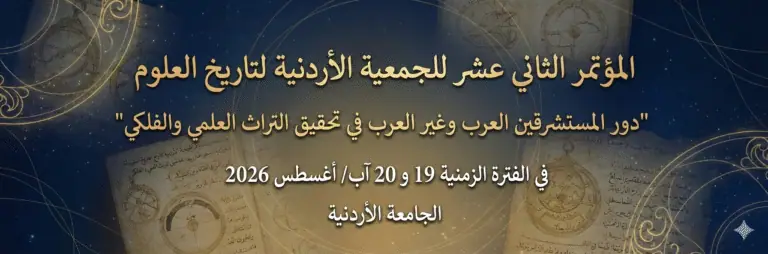
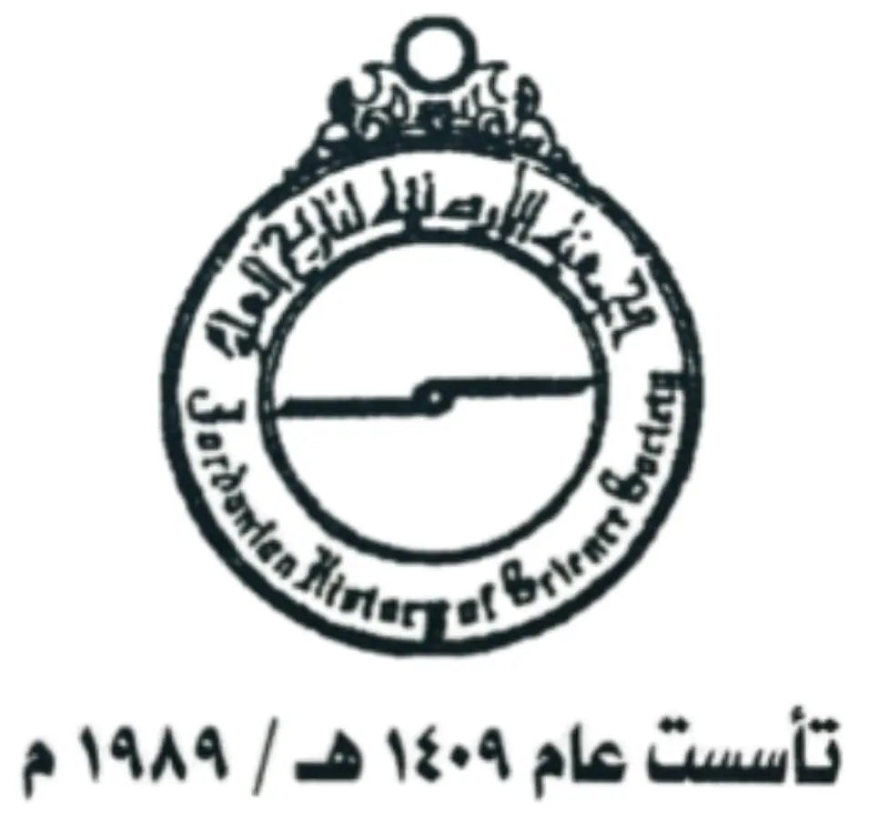

مؤتمرات وندوات وملتقيات أخرى
المؤتمر الثاني عشر للجمعية الأردنية لتاريخ العلوم

المؤتمر الثاني عشر للجمعية الأردنية لتاريخ العلوم
بالتعاون مع الاتحاد العربي لعلوم الفضاء والفلك
وكلية العلوم- الجامعة الأردنية
"دور المستشرقين من غير العرب وغير المسلمين في تحقيق التراث العلمي ونشره"
في الفترة الزمنية 19 و20 من شهر آب/أغسطس 2026
في رحاب
الجامعة الأردنية
يعد المؤتمر الثاني عشر للجمعية الأردنية لتاريخ العلوم، الذي يعقد تحت عنوان “دور المستشرقين من غير العرب وغير المسلمين في تحقيق التراث العلمي ونشره“، أحد الفعاليات العلمية البارزة في المنطقة. يُنظم هذا المؤتمر بالتعاون بين الجمعية الأردنية لتاريخ العلوم و الاتحاد العربي لعلم الفلك والفضاء، ويهدف إلى تسليط الضوء على الدراسات والبحوث التي تتناول تاريخ العلوم والفلك ودور المستشرقين في نقل وترجمة التراث العلمي بين الثقافات.
سيُعقد المؤتمر في رحاب الجامعة الأردنية في العاصمة الأردنية عمان، بتاريخ 19 و20 من شهر آب 2026. يشهد المؤتمر مشاركة واسعة من العلماء والمختصين في مجالات الفلك وتاريخ العلوم من مختلف الدول العربية وغير العربية، حيث تتم مناقشة الأبحاث العلمية والموضوعات المتعلقة بالتحديات الراهنة في الدراسات الفلكية والعلوم بشكل عام.
يسعى المؤتمر إلى تحقيق التبادل المعرفي بين الباحثين وتعزيز التعاون العلمي بين المؤسسات الأكاديمية العربية والدولية في هذه المجالات، بما يسهم في تطوير هذا التخصص العلمي المهم على المستوى الإقليمي والدولي.
- تعزيز التبادل المعرفي بين الباحثين والمختصين في مجالات تاريخ العلوم والفلك، من خلال ورش العمل والجلسات العلمية التي تعزز التعاون الأكاديمي.
- تعزيز دور البحث العلمي في نشر المعرفة المتعلقة بالتراث العلمي والثقافي، وتسليط الضوء على الإسهامات العلمية العربية والإسلامية في مختلف مجالات العلوم والفلك.
- تشجيع تبادل الأفكار والبحوث بين علماء العرب وغير العرب في هذه المجالات، مما يساهم في توسيع الأفق العلمي وبناء جسور تواصل أكاديمية بين الثقافات المختلفة.
- تحفيز الاهتمام بالدراسات التاريخية والعلوم الفلكية، وتشجيع الباحثين على تقديم أبحاث مبدعة تسهم في تطوير مفاهيم جديدة في هذه المجالات.
- تعزيز الوعي العام بأهمية التراث العلمي والثقافي للأمة العربية والإسلامية، وكيفية الحفاظ عليه وتطويره في ضوء التقدم العلمي المعاصر.
- استعراض أحدث التقنيات والتوجهات في دراسة الفضاء وعلم الفلك، ومناقشة التحديات التي تواجه هذا المجال في الوقت الحاضر.
- فتح آفاق التعاون بين المؤسسات الأكاديمية على مستوى العالم العربي والدولي، وذلك من خلال دعوة الجامعات والمراكز البحثية للمشاركة في فعاليات المؤتمر.
- إبراز الدور المحوري للمستشرقين وغيرهم من العلماء الذين ساهموا في الحفاظ على التراث العلمي ونقله بين الحضارات، وكيفية تأثيرهم في تطور العلوم والفلك عبر العصور.
- مواكبة التطورات الحديثة في الأبحاث العلمية، وخاصة في مجال الفضاء والتقنيات الحديثة المتعلقة بالاستكشاف الفلكي، عبر استضافة علماء مختصين لعرض أحدث الأبحاث والتقنيات في هذا المجال.
رسالة المؤتمر
تهدف رسالة المؤتمر الثاني عشر للجمعية الأردنية لتاريخ العلوم إلى إحداث نقلة نوعية في مجال البحث العلمي من خلال تسليط الضوء على تاريخ العلوم والفلك، وتعزيز دور البحث الأكاديمي في نشر وتوثيق التراث العلمي العربي والإسلامي. يركز المؤتمر على تفعيل التعاون العلمي بين الباحثين والمختصين من العالم العربي ومن خارجه، في مجالات الفلك والفضاء، بهدف تقديم رؤى مبتكرة وحلول علمية تسهم في تطوير هذه التخصصات. كما يسعى المؤتمر إلى تعميق الفهم العلمي عبر النقاشات المعمقة وورش العمل المتخصصة، ودعم المبادرات البحثية التي تسهم في تحسين مستوى الدراسات الفلكية وتوسيع نطاق التعاون الدولي.
رؤية المؤتمر
يطمح المؤتمر الثاني عشر للجمعية الأردنية لتاريخ العلوم إلى أن يصبح منصة علمية رائدة تُعزز من تبادل المعرفة بين العلماء والمختصين في مجالات تاريخ العلوم والفلك. يسعى المؤتمر إلى تمكين التعاون الأكاديمي الدولي بين المؤسسات العلمية من خلال تجميع العلماء والباحثين من مختلف أنحاء العالم لتبادل الأفكار والتجارب الرائدة. كما تركز الرؤية على تسليط الضوء على الإسهامات العلمية للتراث العربي والإسلامي في مجال الفلك، والعمل على تطوير هذا المجال من خلال توفير بيئة علمية تحفز الابتكار والتطور المستدام في مجالات الفضاء والعلوم الفلكية.

الجمعية الأردنية لتاريخ العلوم هي جمعية علمية متخصصة مقرّها عمّان، تُعنى بإحياء الاهتمام بتاريخ العلوم والفلك، وتعزيز البحث العلمي المرتبط بهما في الأردن والعالم العربي. تعمل الجمعية على إبراز الإرث العلمي للحضارة العربية والإسلامية وتوثيق إسهاماتها في تطور المعرفة الإنسانية، عبر مبادرات بحثية وتواصل أكاديمي محلي وإقليمي ودولي.
الرسالة
نشر الوعي بتاريخ العلوم والفلك وتطوير البحث فيهما، من خلال تنظيم الفعاليات العلمية والندوات، وبناء منصة تجمع الباحثين والمختصين وتدعم إنتاج المعرفة وتداولها.
الرؤية
أن تكون الجمعية مرجعاً أكاديمياً رائداً لدراسة تاريخ العلوم والفلك في الأردن والعالم العربي، ومحركاً للتعاون العلمي الذي يرفع جودة البحث ويعزز حضوره في المؤسسات العلمية والتعليمية.
مجالات العمل والأهداف
الارتقاء بالمستوى العلمي لأعضاء الجمعية ودعم نموهم الأكاديمي.
تحفيز وإسناد البحوث المتصلة بتاريخ العلوم، مع اهتمام خاص بالفلك.
تنفيذ دراسات وبحوث تتناول العلوم في الحضارة العربية والإسلامية وتوثيق أثرها.
إثارة الاهتمام العام والبحثي بتاريخ العلوم، وإتاحة مسارات مشاركة للباحثين والطلبة.
توثيق الروابط العلمية بين المهتمين بتاريخ العلوم وتبادل الخبرات فيما بينهم.
بناء شراكات فاعلة مع المؤسسات والهيئات والجمعيات العلمية محلياً وعربياً ودولياً.
الإسهام في إدماج منجزات العلم العربي والإسلامي في المناهج الدراسية بالجامعات والمعاهد العلمية.
الأنشطة والبرامج الرئيسية
تنظيم مؤتمرات وندوات ومحاضرات علمية متخصصة في تاريخ العلوم والفلك.
دعم الدراسات والأبحاث وتوثيقها، وإبراز المساهمات العربية والإسلامية عبر نشرٍ علمي أو منصات معرفية.
إطلاق مبادرات تعاون مع الجامعات والمؤسسات البحثية، وتبادل الخبرات مع الهيئات العلمية الإقليمية والدولية.
يُعد الاتحاد العربي لعلوم الفضاء والفلك منظمة عربية متخصصة غير حكومية، تأسست عام 1998 ومقرها الرئيسي في عمّان، الأردن. يعمل الاتحاد تحت مظلة مجلس الوحدة الاقتصادية التابع لجامعة الدول العربية، كما يتمتع بعضوية الاتحاد الفلكي الدولي (IAU). يهدف الاتحاد إلى تعزيز التعاون العلمي بين الدول العربية في مجالي الفضاء والفلك من خلال دعم مشاريع بحثية مشتركة وتنظيم مؤتمرات وندوات علمية. كما يسعى إلى نشر الوعي المجتمعي بأهمية هذه العلوم وتأثيرها على تقدم البشرية، فضلاً عن دعم الابتكار وتطوير التقنيات الحديثة في هذه المجالات.
الأنشطة الرئيسية:
تنظيم فعاليات علمية سنوية لتمكين العلماء من تبادل المعرفة.
دعم وتنفيذ مشاريع بحثية عربية مشتركة.
تقديم برامج تدريبية لبناء قدرات الباحثين في علوم الفضاء والفلك.
تعزيز التعاون الدولي مع المؤسسات العالمية الكبرى.
الجامعة الأردنية هي أقدم وأكبر مؤسسة تعليمية في الأردن، تأسست عام 1962 في العاصمة عمّان. تسعى الجامعة إلى تحقيق التميز الأكاديمي من خلال تقديم برامج أكاديمية متنوعة في مختلف التخصصات، حيث تقدم أكثر من 90 برنامجًا في البكالوريوس وأكثر من 100 برنامج في الدراسات العليا.
تتميز الجامعة بحرصها على تطوير البحث العلمي، إذ تضم مراكز بحثية متخصصة في العديد من المجالات العلمية والتقنية. كما تسعى إلى تعزيز التعاون الدولي مع الجامعات العالمية، مما يعزز من مكانتها كمنارة علمية في العالم العربي.
الرسالة والرؤية:
تسعى الجامعة الأردنية إلى إعداد خريجين متميزين يمتلكون مهارات وكفاءات عالية من خلال بيئة تعليمية وبحثية متقدمة. كما تسعى إلى تعزيز دورها الريادي في التعليم والبحث العلمي على المستوى العالمي.
البرامج الأكاديمية:
برامج البكالوريوس: تشمل مجالات الهندسة، الطب، العلوم، الآداب، الأعمال، وغيرها.
برامج الدراسات العليا: تضم برامج الماجستير والدكتوراه في العديد من التخصصات.
التعليم المستمر: تقدم برامج تدريبية متخصصة تلبي احتياجات المجتمع المحلي والإقليمي.
البدايات الأولى للاهتمام بالتراث العلمي
نشأة العناية بالتراث العلمي، وروّاده، ومسارات جمع المخطوطات ورصدها ووصفها.إسهامات المستشرقين غير العرب وغير المسلمين
عرض نماذج من جهودهم البارزة في تحقيق المخطوطات العلمية أو نشرها أو دراستها وتقديمها للأوساط الأكاديمية.دور المستشرقين والباحثين الغربيين في تحقيق التراث الفلكي العربي الإسلامي: الأزياج، والآلات الفلكية، وانتقال المعرفة الفلكية إلى أوروبا
يتناول هذا المحور جهود غير العرب وغير المسلمين في دراسة وتحقيق ونشر المخطوطات الفلكية العربية والإسلامية، ولا سيما كتب الأزياج، ورسائل الأسطرلاب والآلات الفلكية، وكتب الهيئة وحساب المواقيت. كما يبحث في أثر هذه الجهود في إبراز أصالة المدرسة الفلكية العربية الإسلامية، وفي تصحيح بعض التصورات الاستشراقية القديمة التي اختزلت دور العلماء المسلمين في النقل فقط، مع التركيز على مناهج التحقيق، وفهارس المخطوطات، والترجمة، والدراسة الرياضية للنصوص الفلكية.
تحقيق المخطوطات العلمية وأثره في تطور المعرفة العالمية
إبراز القيمة العلمية للمخطوطات، ومنهجيات تحقيقها، ودورها في نقل المعرفة وتأثيرها في مسارات النهضة العلمية الأوروبية.المؤسسات العلمية الحاضنة للتراث: مجلات ومراكز وجامعات ومكتبات
التعريف بالمجلات العلمية، والمراكز البحثية، والجامعات، والمكتبات التي أسهمت (ولا تزال) في خدمة التراث العلمي حفظًا وفهرسةً وتحقيقًا ونشرًا.ملامح الاهتمام العربي والإسلامي بالتراث العلمي
نماذج من جهود العلماء والمؤسسات العربية والإسلامية في إحياء التراث العلمي، مع التركيز على المخطوطات والمدارس العلمية والمراكز المتخصصة.أثر المؤتمرات والفعاليات العلمية في إحياء التراث العلمي
دور اللقاءات العلمية محليًا ودوليًا في تنشيط البحث، وبناء الشبكات العلمية، وتبادل الخبرات، وتحفيز مشاريع التحقيق والنشر.دور المؤسسات والجمعيات والاتحاد العربي لعلوم الفضاء والفلك في الإحياء والنشر
استعراض مساهمات المؤسسات والجمعيات المتخصصة—ومنها الاتحاد العربي—في دعم مبادرات إحياء التراث العلمي وتعميمه عبر النشر والبرامج العلمية.دور المستشرقين والباحثين غير العرب وغير المسلمين في تحقيق التراث الطبي العربي الإسلامي ونشره: طب العيون أنموذجًا
يعالج هذا المحور جهود المستشرقين ومؤرخي الطب في تحقيق المخطوطات الطبية العربية الإسلامية ودراستها وترجمتها، مع التركيز على تراث طب العيون بوصفه مجالًا علميًا متميزًا في الحضارة العربية الإسلامية. ويتناول المحور أعمال أطباء مثل حنين بن إسحاق، وعلي بن عيسى الكحّال، وعمّار بن علي الموصلي، وخليفة بن أبي المحاسن الحلبي، كما يدرس أثر تحقيق هذه النصوص في إبراز إسهام العرب والمسلمين في تاريخ الطب وانتقال المعرفة الطبية إلى أوروبا. وتشير مكتبة الطب الوطنية الأمريكية إلى أهمية المخطوطات الطبية الإسلامية في تاريخ الطب الأوروبي الوسيط، كما تعرض مكتبة قطر الرقمية نماذج من الأدبيات الطبية العربية وصيغها التعليمية.
يستهدف المؤتمر الثاني عشر للجمعية الأردنية لتاريخ العلوم مجموعة متنوعة من الفئات العلمية والمهنية التي تساهم في تطوير وتحقيق أهداف المؤتمر في مجالات الفلك وعلوم الفضاء وتاريخ العلوم. الفئات المستهدفة تشمل:
الباحثون والعلماء في مجالات الفلك والفضاء: تشمل هذه الفئة المتخصصين في دراسات الفلك والفضاء من مختلف أنحاء العالم العربي والدولي. سيحظى الباحثون بفرصة لتبادل المعرفة العلمية، ومناقشة أحدث التطورات في علم الفلك، والفضاء، والتكنولوجيا الفضائية، بالإضافة إلى تقديم أبحاثهم ومشاريعهم البحثية.
أساتذة الجامعات والمتخصصون في تاريخ العلوم: يهدف المؤتمر إلى جذب أساتذة الجامعات والمعلمين في مجالات العلوم والفلك من مختلف المؤسسات الأكاديمية. سيمكنهم المؤتمر من تعزيز فهمهم لعلم تاريخ العلوم والفلك وتوسيع آفاق البحث الأكاديمي في هذا المجال.
طلاب الدراسات العليا في مجالات العلوم والفلك: يُعد المؤتمر فرصة مثالية لطلاب الماجستير والدكتوراه المهتمين بتاريخ العلوم والفلك للمشاركة في ورش العمل العلمية والتفاعل مع الخبراء والعلماء. يمكنهم أيضًا عرض أبحاثهم ومشاريعهم البحثية ضمن بيئة أكاديمية محفزة.
المهندسون المتخصصون في تقنيات الفضاء: يستهدف المؤتمر المهندسين العاملين في مجال الفضاء والتكنولوجيا المتقدمة المرتبطة بالاستكشاف الفضائي. سيتم مناقشة التقدم التكنولوجي في علوم الفضاء، مما يعزز فرص التعاون بين المهندسين والباحثين الأكاديميين في هذه المجالات.
المؤسسات الحكومية وغير الحكومية المعنية بالعلوم والتكنولوجيا: يتوجه المؤتمر إلى المسؤولين في المؤسسات الحكومية وغير الحكومية التي تهتم بالعلوم والتكنولوجيا، بما في ذلك وزارات التعليم، وهيئات الفضاء الوطنية، والمنظمات غير الربحية التي تدعم المشاريع العلمية والتعليمية في مجالات الفلك والفضاء.
المهتمون بالتراث العلمي والثقافي: يهدف المؤتمر إلى جذب المهتمين بتاريخ العلوم والفلك في العالم العربي والإسلامي، بما في ذلك الباحثون في التراث العلمي والحضارات القديمة. سيتيح المؤتمر الفرصة للمهتمين بالتراث العلمي والثقافي لتبادل الأفكار حول كيفية الحفاظ على هذا التراث وتنميته.
الطلاب الجامعيون والمهنيون المهتمون بالتخصصات العلمية: يُرحب المؤتمر بالطلاب من مختلف التخصصات العلمية الذين يرغبون في التعرف على الأبحاث الحديثة في الفلك وعلوم الفضاء، ويهدف إلى تحفيز اهتمامهم بالمجالات العلمية المتقدمة، وزيادة وعيهم بالأبحاث الفلكية وتاريخ العلوم.
الصحفيون والإعلاميون المهتمون بالعلوم: يشمل المؤتمر أيضًا الصحفيين والإعلاميين المتخصصين في تغطية الأخبار العلمية، الذين يمكنهم الاستفادة من الفعاليات في تغطية المواضيع العلمية المتقدمة، ونقل المعلومات الهامة حول الفلك وعلوم الفضاء إلى الجمهور العام.
الخبراء في التكنولوجيا والذكاء الاصطناعي: يتوجه المؤتمر إلى الخبراء في مجال الذكاء الاصطناعي، حيث سيتم تناول استخدامات الذكاء الاصطناعي في تحليل البيانات الفلكية، واكتشاف الكواكب، ودراسة الظواهر الفلكية، مما يعزز التفاعل بين فنيي البيانات والباحثين في العلوم الفلكية.
أعضاء الهيئة التدريسية والباحثون في تخصص التاريخ، ولا سيما تاريخ العلوم، وتاريخ الحضارة العربية الإسلامية، وتاريخ التراث العلمي.
المواعيد المهمة للمؤتمر
- موعد بداية المؤتمر : 19 آب/أغسطس 2026 (يوم الأربعاء)
- موعد نهاية المؤتمر : 20 آب/أغسطس 2026 (يوم الخميس)
- الموعد النهائي للتسجيل: 17 تموز/يوليو 2026
- الموعد النهائي لتقديم ملخصات الأبحاث: 20 تموز/يوليو 2026
- إعلان قبول الأبحاث: سيتم الإعلان عن قبول الأبحاث في 25 تموز/يوليو 2026.
- إرسال الأبحاث النهائية (في حال قبول الملخصات: 1 أغسطس 2026.
د. عبد المجيد نصير
- البريد الإلكتروني:
د. عوني الخصاونة (أمين عام الاتحاد العربي لعلوم الفضاء والفلك)
- البريد الإلكتروني:
للتسجيل للمؤتمر عن طريق تعبئة هذا النموذج:
- د. عبدالمجيد نصير
- د. عوني الخصاونة
- د. مشهور الوردات
- د. أحمد ملاعبة
- د. رياض مناصرة
- م. فيصل الأنصاري
- م. أسامة فتحي
- أ. هاني الضليع
- د. عوني الخصاونة
- د. سطام الشقور
- صهيب السليحات
- دلال اللالا
- أحمد الخصاونة
- د. ديالا طنينة
- د. معتصم جمعة السليحات
- فايزة المحتسب
- ديان الدويري
- دانيا أبو نواس
- ليان المهيرات
مؤتمرات وندوات وملتقيات أخرى
- المؤتمر العالمي الأول لاستكشاف الفضاء: القمر وما بعده
- اجتماع الشرق الأوسط وأفريقيا الإقليمي للاتحاد الفلكي الدولي (MEARIM)
- المؤتمر العربي الثامن للفلك والجيوفيزياء
- المؤتمر الحادي عشر: شخصيات مهمة في تاريخ الحضارة العربية الإسلامية
- الندوة الدولية: التطورات في الاتصالات الفضائية (تشرين الثاني 2024)
- اجتماع مكافحة الكوارث وتغير المناخ في المناطق القاحلة
- الورشة الفلكية العربية لفيزياء الشمس 2025
- المدرسة الصيفية الفلكية الإقليمية الثالثة (3RASS) في مرصد بيوراكان للفيزياء الفلكية – أرمينيا في الفترة من 11 إلى 15 سبتمبر 2023
- ورشة علمية حول استكشاف الفضاء والابتكار
- الملتقى العربي الثالث لهواة علوم الفضاء والفلك، الجزائر
- الملتقى العربي الثامن لعلوم الفضاء والفلك
- المهرجان الوطني السادس عشر في علم الفلك الجماهيري
- المهرجان الوطني الثامن عشر في علم الفلك الجماهيري – قسنطينة – الجزائر
- رئيس المعهد القومي للبحوث الفلكية والجيوفيزيقية يزور مقر الاتحاد العربي لعلوم الفضاء والفلك في عمّان